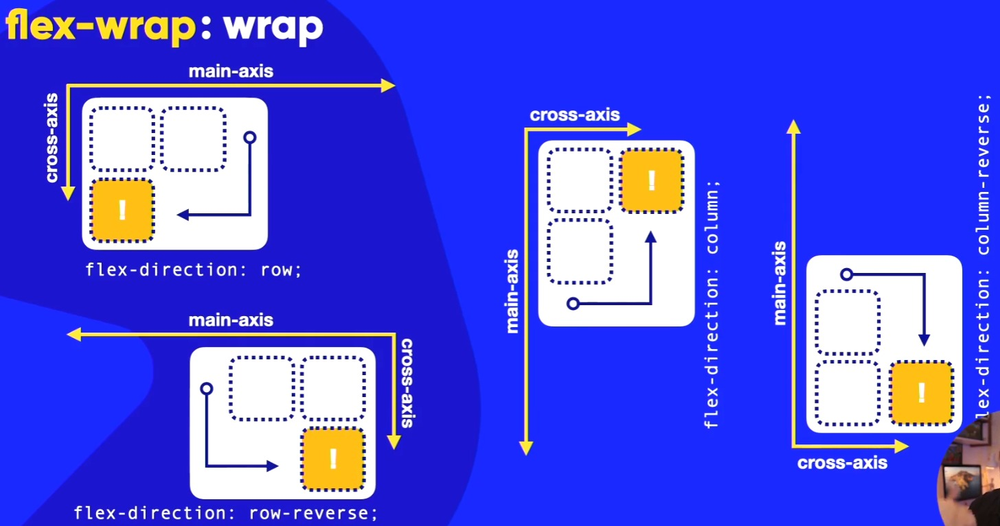
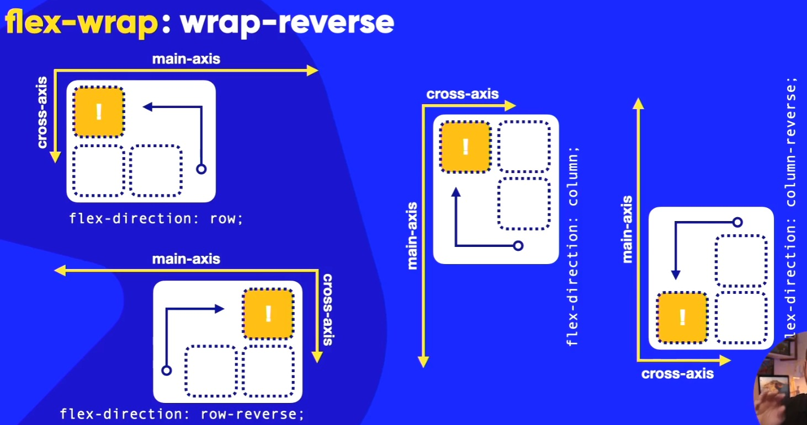

Ao usar essa propriedade, você pode controlar como os itens flexíveis se comportam quando não há espaço suficiente em uma única linha.
O encolhimento dos itens flexíveis é uma característica importante do Flexbox, permitindo que os itens se ajustem dinamicamente ao espaço disponível no contêiner flexível.
Se usar o FLEX-WRAP: NOWRAP, o tamanho do bloco vai dependender muito do tamanho do conteúdo que existe nele.
Se o conteúdo for muito grande, o bloco pode acabar ficando maior do que o esperado, causando problemas de layout e dificultando a leitura ou a interação com o conteúdo.
Ao colocar um DISPLAY: FLEX dentro do um container, ele já vem por padrão FLEX-WRAP: NOWRAP!
Ele se comporta da mesma forma que o flex-wrap: nowrap. A diferença dele é que quando o conteúdo ultrapassa o tamanho do bloco, ele quebra a linha na direção do cross-axis criando uma nova linha para acomodar o conteúdo que passou do tamanho do bloco!
Ele se comporta da mesma forma que os outros dois. A diferença dele é que quando o conteúdo ultrapassa o tamanho do bloco, ele quebra a linha na direção oposta do croos-axis criando uma nova linha para acomodar o conteúdo que passou do tamanho do bloco! Ao colocarmos o FLEX-DIRECTION: ROW e usarmos esse FLEX-WRAP: WRAP-REVERSE, quando chegar no limite do tamanho do bloco, ele vai criar uma nova linha acima da primeira linha!
Mas lembrando que a direção do cross-axis pode ser alterada ao mudarmos o flex-direction o que significa que o comportamento do flex-wrap: wrap-reverse pode mudar dependendo do valor definido para o flex-direction!
Veja os exemplos aqui em baixo para onde o conteúdo irá após ultrapassar o tamanho do bloco em cada um dos casos! ↓

Mais um exemplo aqui em baixo mas dessa vez com o FLEX-WRAP: WRAP-REVERSE ↓:

Quando for usar a propriedade FLEX-DIRECTION: ROW; e a propriedade FLEX-WRAP: NOWRAP; a gente pode usar o seguinte SHORTCUT:
flex-flow: row nowrap;
Lembrando que essa propriedade que usamos aqui em cima é aquela que faz com que o conteúdo que está dentro do container fléxivel não quebre. Ou seja, ele vai ficar uma linha independente do tamanho do conteúdo que estiver dentro dele!
O W3C INDICA que a gente use sempre o flex-flor ao invés de usar as duas propriedades separadas! Mas isso fica ao seu critério mas também é bom para manter o código mais limpo, com menos linhas e organizado!
Ao usar o FLEX-FLOW: ROW WRAP; juntamente com o FLEX: AUTO;, ele primeiramente vai preencher
o espaço que estiver fazio do container fléxivel e depois que chegar no limite do tamanho do bloco, ele vai começar a encolher os blocos para que todos eles caibam dentro do container flexível tentando não criar linhas novas o máximo possível!
É como diz o nome, um fluxo de itens flexíveis dentro do container flexível!
Ou seja, você vai configurar a direção e o comportamento do empacotamento(wrap)
dentro dele que é a forma como ele vai quebrar
.
Quando for usar a propriedade COLUMN; você obrigatoriamente terá que usar o height no container para que você veja o efeito acontecendo!